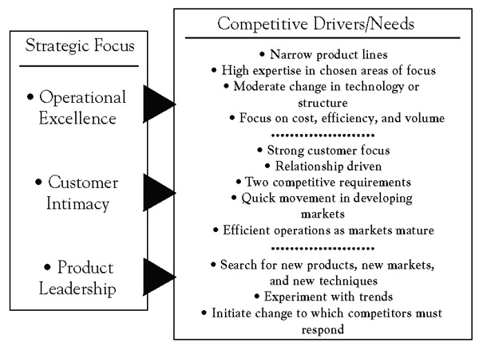

A business model—and a company’s principal value proposition in particular—is shaped by the firm’s underlying value creation strategy or value disciplineA statement of strategic focus that describes different ways a firm can differentiate itself from competitors., a term coined by Michael Treacy and Fred Wiersema to describe different ways companies can differentiate itself from competitors.This section is based on Treacy and Wiersema (1993). A value discipline is more than just a benefit statement—it is a statement of strategic focus and provides a context for a company to set its corporate vision and objectives, to target its most profitable customers, and to focus and align its activities.
In contrast to more traditional market segmentation strategies, which group customers by geography, product mix, or demographics, value disciplines segment customers according to the full range of benefits that are most valuable to them. Specifically, Treacy and Wiersema identify three generic value disciplines: operational excellence, customer intimacy, and product leadership.
A strategy of operational excellenceThe relentless focus on providing customers with reliable products or services at competitive prices and delivered with minimal difficulty or inconvenience. is defined by a relentless focus on providing customers with reliable products or services at competitive prices and delivered with minimal difficulty or inconvenience. Dell Inc., for instance, is a master of operational excellence. Dell has shown buyers of electronics that they do not have to sacrifice quality or state-of-the-art technology in order to buy PCs, printers, or other products easily and inexpensively. By selling to customers directly, building to order rather than to inventory, and creating a disciplined, extremely low-cost culture, Dell has been able to undercut its competitors in price yet provide high-quality products and service. Other leaders in operational excellence include Wal-Mart, Jet Blue, ING bank, and Federal Express.
Companies pursuing operational excellence are relentless in seeking ways to minimize overhead costs, to eliminate intermediate production steps, to reduce transaction and other “friction” costs, and to optimize business processes across functional and organizational boundaries. They focus on delivering their products or services to customers at competitive prices and with minimal inconvenience. Because they build their entire businesses around these goals, these organizations do not look or operate like other companies pursuing other value disciplines.
An operationally excellent company proactively designs its entire business model for its targeted customer segments, paying particular attention to speed, efficiency, and cost. This includes critically reevaluating business processes, reassessing the complete supply chain, and reaching out to suppliers, distributors, and customers to create a larger, more integrated approach to meeting customer needs.
Achieving market leadership through operational excellence requires the development of a business model that pervades the entire organization. Thus, becoming operationally excellent is a challenge not just for the manufacturing department but for the entire company. And while operationally excellent companies are focused on cost and efficiency, they are not necessarily the lowest cost producer or supplier. The notion that an operationally excellent company is fixated on costs and cost cutting, has a rigid command and control organization, and is focused on plant and internal efficiencies is a limited view that seriously misstates the intent and goals of operational excellence.
In April of 2009, Air Arabia, the first and largest low-cost carrier (LCC) in the Middle East and North Africa, announced that it was recognized by Airbus, one of the world’s leading aircraft manufacturers, for achieving the highest operational utilization in the world. This is the fourth consecutive year that Air Arabia maintained the lead among all global airlines operating Airbus A320 aircraft. According to the latest reports from Airbus, Air Arabia achieved the highest aircraft utilization in 2008, with 99.8% operational reliability.
Operational excellence and service reliability are integral to Air Arabia’s success. In selecting Air Arabia for its operational excellence rankings, Airbus conducted a detailed technical analysis of all carriers in the segment. Air Arabia recorded the highest indicators for operational reliability and aircraft utilization reflecting the carrier’s extremely high maintenance and technical standards.
Currently, Air Arabia has a fleet of 16 Airbus A320 aircraft and has already placed an order of 44 additional Airbus A320s. By the end of 2009, Air Arabia expected to add two more aircraft and increase its fleet size to 18.
Air Arabia (PJSC), listed on the Dubai Financial Market, is the Middle East and North Africa’s leading low-cost carrier. Air Arabia commenced operations in October 2003 and currently operates a fleet of 16 new Airbus A320 aircraft, currently serving 44 destinations across the Middle East, North Africa, South Asia, and Central Asia through its main hub in Sharjah, United Arab Emirates.
Air Arabia is modeled after leading American and European low-cost airlines, and its business model is customized to accommodate local preferences. Its main focus is to make air travel more convenient through Internet bookings and through offering the lowest fares in the market along with the highest levels of safety and service standards.
A focus on customer intimacyStrategy that focuses on segmenting and targeting markets precisely and then tailoring offerings to exactly match the demands of those niches., the second value discipline, means segmenting and targeting markets precisely and then tailoring offerings to exactly match the demands of those niches. Companies that excel in customer intimacy combine detailed customer knowledge with operational flexibility so they can respond quickly to almost any need, from customizing a product to fulfilling special requests. As a consequence, these companies engender tremendous customer loyalty. Nordstrom, the department store, for example, is better than any other company in its market of customer service and getting the customer precisely the product or information he or she wants.
While companies pursuing operational excellence concentrate on the operational side of their business models, those pursuing a strategy of customer intimacy continually tailor and shape products and services to fit an increasingly fine definition of the customer. This can be expensive, but customer-intimate companies are willing to take a long-term perspective and invest to build lasting customer loyalty. They typically look at the customer’s lifetime value to the company, not the value of any single transaction. This is why employees in these companies will do almost anything—with little regard for initial cost—to make sure that each customer gets exactly what he or she really wants. Nordstrom is a good example of such a company. A few years ago, Home Depot was known for its customer intimacy; more recently, however, it has strayed from this strategic focus.
Customer-intimate companies understand the difference between profit or loss on a single transaction and profit over the lifetime of their relationship with a single customer. Most companies know, for instance, that not all customers require the same level of service or will generate the same revenues. Profitability, then, depends in part on maintaining a system that can identify, quickly and accurately, which customers require what level of service and how much revenue they are likely to generate. Sophisticated companies now routinely use a telephone-computer system capable of recognizing individual customers by their telephone numbers when they call. Such systems allow differential levels of service for different customer groups. Clients with large accounts and frequent transactions are routed to their own senior account representative; those who typically place only an occasional order are referred to a more junior employee or a call center. In either case, the customer’s file appears on the representative’s screen before the phone is answered. What is more, such a system allows the company to direct specific value-added services or products to specific groups of clients.
Some years ago, Kraft USA decided to strengthen its focus on customer intimacy and created the capacity to tailor its advertising, merchandising, and operations in a single store, or in several stores within a supermarket chain, to the needs of those stores’ particular customers. To do so, it had to develop new information systems and analytical capabilities and educate its sales force to create multiple, so-called micromerchandising programs for a chain that carries its products. In other words, Kraft first had to change itself: it had to create the organization, build the information systems, and educate and motivate the people required to pursue a strategy of customer intimacy.
Like most companies that pursue customer intimacy, Kraft decentralized its marketing operations in order to empower the people actually dealing with the customer. Today, Kraft salespeople are trained and rewarded to work with individual store managers and regional managers to create customized promotional programs. To do so, the company gives them the data they need to make recommendations to store managers and to shape promotional programs such as consumer purchases by store, category, and product and their response to past price and other promotions. At corporate headquarters, Kraft trade marketing teams sort and integrate information from multiple sources to supply the sales force with a menu of programs, products, value-added ideas, and selling tools. For instance, the trade marketing team sorted all shoppers into six distinct groups, with names such as “full-margin shoppers,” “planners and dine-outs,” and “commodity shoppers.”
Isadore Sharp, one of four children of Polish parents who immigrated to Toronto before his birth in 1931, opened his first hotel—the Four Seasons Motor Hotel—in 1961 with 125 affordable rooms in a rather seedy area outside the core of downtown Toronto.
At that time, a would-be hotelier had two choices. He could build a small motel with fewer than 200 rooms and simple amenities at relatively low cost. The alternative was a large downtown hotel catering to business travelers. Such hotels usually had at least 750 guest rooms and extensive amenities, including conference facilities, multiple restaurants, and banquet rooms. Each type of hotel had its advantages as well as distinct drawbacks. For all its comfort and intimacy, the small motel was not an option for the business traveler who needed a well-appointed meeting room or state-of-the-art communications facilities. Large hotels produced a big enough pool of revenues to fund the features the market demanded but tended to be cold and impersonal.
But after opening his fourth hotel, Sharp decided to experiment and combine the best of the small hotel with the best of the large hotel. He envisioned a medium-sized hotel, big enough to afford an extensive array of amenities but small enough to maintain a sense of intimacy and personalized service. Sharp reasoned that if the Four Seasons offered distinctly better service than its competitors, it could charge a substantial premium, boosting revenue per room to the point where it could offer top-of-the-line amenities. Before he could ask guests to pay a superpremium room rate, though, Sharp understood that he would have to offer them an entirely different kind of service.
Luxury, at that time, was chiefly defined in terms of architecture and décor. Sharp decided to redefine luxury as service—a support system to fill in for the one left at home and the office. Four Seasons became the first to offer shampoo in the shower; 24-hour room service; bathrobes; cleaning and pressing; a two-line phone in every guest room; a big, well-lighted desk; and 24-hour secretarial services. Defying the traditional approach in the industry, which was to set a relatively fixed standard of physical and service quality across the entire chain, Sharp made sure each city’s Four Seasons reflected the local color and culture.
To free up capital and focus its senior management on providing service rather than managing real estate and financing, Four Seasons also became the first big hotel company to manage, rather than own, the hotel facilities that bore its name.
Redefining the way it treated its own employees also helped sharpen Four Seasons’ customer focus. Rather than treating its employees as disposable, Four Seasons distinguished itself by hiring more for attitude than experience, by establishing career paths and promotion from within, and by paying as much attention to employee concerns as guest complaints. It pushed responsibility down and encouraged self-discipline by setting high performance standards and holding people accountable, adhering to the company’s credo, “generating trust.” Significantly, Four Seasons has no separate customer service department. Each employee at the Four Seasons is not just a member of the customer service department but is in charge of it.
Today, with 73 hotels in 31 countries, and with 25 properties under development, Four Seasons is considerably larger than the next biggest luxury player. Condé Nast Traveler ranks 18 Four Seasons hotels in its global “Top 100” list, more than 3 times the next most-cited chain. A Four Seasons signifies that a city has become a global destination.
Finally, product leadershipStrategy that focuses on offering leading-edge products and services that enhance the customer’s use or application of the product, thereby making rivals’ goods obsolete., the third discipline, means offering customers leading-edge products and services that consistently enhance the customer’s use or application of the product, thereby making rivals’ goods obsolete. Companies that pursue product leadership are innovation-driven, and they constantly raise the bar for competitors by offering more value and better solutions. Product leaders work with three basic principles. First, they focus on creativity; constant innovation is the key to their success. They look for new ideas inside as well as outside the company, have an “experimentation is good” mind-set, and reward risk taking. Second, they know that in order to be successful, they must be fast in capitalizing on new ideas; they know how to commercialize new ideas quickly. To do so, all their business and management processes have to be engineered for speed. Third, product leaders must relentlessly pursue new solutions to the problems that their own latest product or service has just solved. In other words, if anyone is going to render their technology obsolete, they prefer to do it themselves.
Examples of companies that use product leadership as a cornerstone of their strategies include BMW, Intel, Apple, and Nike. These companies have created and maintain a culture that encourages employees to bring ideas into the company and, just as important, they listen to and consider these ideas, however unconventional and regardless of the source. In addition, product leaders continually scan the landscape for new product or service possibilities; where others see glitches in their marketing plans or threats to their product lines, companies that focus on product leadership see opportunity and rush to capitalize on it.
Product leaders avoid bureaucracy at all costs because it slows commercialization of their ideas. Managers make decisions quickly since, in a product leadership company, it is often better to make a wrong decision than to make a late or not at all. That is why these companies are prepared to decide today, then implement tomorrow. Moreover, they continually look for new ways—such as concurrent engineering—to shorten their cycle times. Japanese companies, for example, succeed in automobile innovation because they use concurrent development processes to reduce time to market. They do not have to aim better than competitors to score more hits on the target because they can take more shots from a closer distance.
Product leaders are their own fiercest competitors. They continually cross a frontier, then break more new ground. They have to be adept at rendering obsolete the products and services that they have created because they realize that if they do not develop a successor, another company will. Apple and other innovators are willing to take the long view of profitability, recognizing that whether they extract the full profit potential from an existing product or service is less important to the company’s future than maintaining its product leadership edge and momentum. These companies are never blinded by their own successes.
Finally, product leaders also possess the infrastructure and management systems needed to manage risk well. For example, each time Apple ventures into an untapped area, it risks millions of dollars as well as its reputation. It takes that chance, though, in part because its hybrid structure allows it to combine the economies of scale and resource advantages of a multibillion-dollar corporation with the cultural characteristics of a startup company.
Figure 4.3 "Choosing a Value Proposition: Value Disciplines" depicts strategic focus in terms of the three value disciplines discussed here and summarizes how each responds to a particular set of competitive drivers and customer needs.
Figure 4.3 Choosing a Value Proposition: Value Disciplines
How does Apple consistently redefine each market it enters by creating products that leapfrog the competition? First, it takes clarity of purpose and resolve: it may take years to cultivate new skills and build the right new product. Second, a significant investment in infrastructure is required: for example, Apple supports a dedicated innovation team. Third, consistently redefining markets requires strategic clarity: innovating effectively means creating your own opportunities in a crowded marketplace to avoid both mediocrity and commoditization. Fourth, patience is essential: creativity does not always follow the clock. False starts and the occasional flop are part of the process and must not only be tolerated but be sources of learning. Fifth, strong leadership is a prerequisite: innovation does not happen by committee. Visionaries with effective management skills are hard to find, but they are a critical ingredient for success.
Clarity of Purpose and Resolve
Apple’s company motto, “Think Different,” provides a hint at how Apple maintains focus and its introspective, self-contained operating style that is capable of confounding competitors and shaking up entire industries. Internally, Apple barely acknowledges competition. It is the company’s ability to think differently about itself that keeps Apple at the head of the pack. Current and past employees tell stories about products that have undergone costly overhauls just to improve one simple detail. Other products are canceled entirely because they do not fit in or do not perform up to par. Apple’s culture has codified a habit that is good for any company to have but is especially valuable for firms that make physical things: stop, step back from your product, and take a closer look. Without worrying about how much work you have already put into it, is it really as good as it could be? Apple constantly asks that question.
Infrastructure Investment
From the outside, Apple’s offices look like those of just about any large modern American corporation. Having outgrown its headquarters campus in Cupertino, California, Apple now has employees in other buildings scattered across the town and around the world. Size and sprawl are formidable challenges that most companies do not manage very well, either by splintering into disorganized, undisciplined communities or by locking employees into tight, stifling bureaucracies. Apple tends toward the latter, but it does so in a unique way that generally (but not always) plays to its advantage. At its worst, Apple’s culture is characterized by paranoia: employees are notoriously secretive and continuously fear being fired or sued for speaking to anyone outside the company. This obsession with secrecy does give Apple an element of surprise in the marketplace. But this comes at a high cost. Apple’s corporate culture came under scrutiny recently after an employee of a foreign supplier—reportedly under suspicion for leaking the prototype of a new iPhone—committed suicide in Shenzhen, China. Beyond the secrecy, which affects everyone, Apple’s approach is hardly one-size-fits-all. Rank-and-file employees are often given clear-cut directives and close supervision. Proven talent gets a freer hand, regardless of job title.
Strategic Clarity
Over time, Apple has built a seasoned management team to support bold new product initiatives. The team’s guiding principles include the following:
Patience
Apple’s corporate culture is different because the company dances to a rhythm of its own making. Although its rising stock has become a vital part of many portfolios, Apple cancels, releases, and updates products at its own speed, seemingly irrespective of market conditions or competitive pressure. Apple does not telegraph its moves, either: the iPod and iPhone, both iconic products, each began as rumors that Apple seemed determined to quash.
Strong Leadership
New adherents to the cult of Steve Jobs may be surprised to hear this: the most iconic Apple laptop, the original PowerBook, was released in 1991 after Jobs had been absent for 6 years. Jobs was not responsible for this enduring innovation. So does that mean Steve Jobs is irrelevant? Or is Jobs—and his maniacal focus on building insanely great products—a necessary ingredient of Apple’s success? It is said that great leaders are made by their circumstances and that their great deeds actually reflect the participation of thousands, or even millions, of people. In the case of Apple, there would be no Mac, no iPod, and no iPhone without the efforts of thousands of engineers and vast numbers of consumers who were looking for products that better served their needs. That said, Jobs is an imposing figure, and if he was “made” by his circumstances, that process took many years. Remember that the first edition of Steve Jobs—the young inventor who, at 21, created Apple Computer—was not the visionary we know today. Instead, after 9 years at Apple’s helm, the young Steve Jobs was ousted because of his aggressive, take-no-prisoners personality, which created a poisonous, unproductive atmosphere when it pervaded the company.
Today’s Steve Jobs seems to have learned how to focus that aggressive, take-no-prisoners personality more shrewdly and to great effect. While he is still an essential part of Apple’s success, the company has also institutionalized many of Jobs’ values to such an extent that Apple is now far less dependent on him. Tim Cook, for example, functioned effectively as acting CEO when Jobs was on sick leave recently. But questions remain. So long as the overwhelming personality of Jobs is present, can anyone really grow into that position? Only when Jobs permanently steps back from his role will we really be able to determine how well Apple has learned the lessons he has taught.